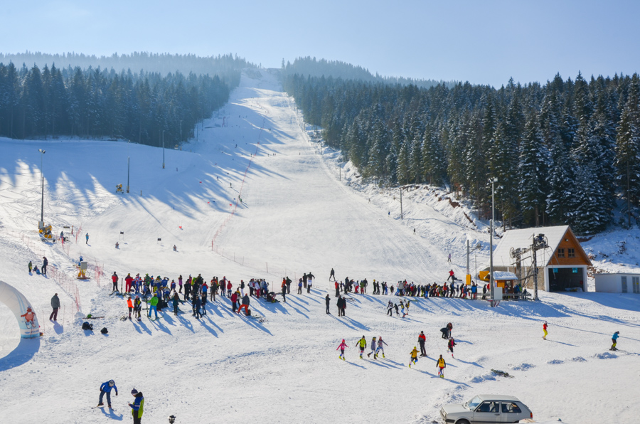

<!DOCTYPE html>
<html xmlns="http://www.w3.org/1999/xhtml" lang="sr-Cyrl"></html>
  <head>
    <meta charset="utf-8" />
    <meta name="viewport" content="width=device-width, initial-scale=1.0" />
<title>Предлог пројекта - Планински дрворед &#8212; Пројектна настава за седми разред - Pygame</title>
    <link rel="stylesheet" href="_static/pygments.css" type="text/css" />
    <link rel="stylesheet" href="_static/basic.css" type="text/css" />
    <link rel="stylesheet" type="text/css" href="_static/activecode.css" />
    <link rel="stylesheet" type="text/css" href="_static/codemirror.css" />
    <link rel="stylesheet" type="text/css" href="_static/qchoice.css" />
    <link rel="stylesheet" type="text/css" href="_static/clickable.css" />
    <link rel="stylesheet" type="text/css" href="_static/pytutor.css" />
    <link rel="stylesheet" type="text/css" href="_static/modal-basic.css" />
    <link rel="stylesheet" type="text/css" href="_static/datafile.css" />
    <link rel="stylesheet" type="text/css" href="_static/dragndrop.css" />
    <link rel="stylesheet" type="text/css" href="_static/fitb.css" />
    <link rel="stylesheet" type="text/css" href="_static/matrixeq.css" />
    <link rel="stylesheet" type="text/css" href="_static/parsons.css" />
    <link rel="stylesheet" type="text/css" href="_static/lib/prettify.css" />
    <link rel="stylesheet" type="text/css" href="_static/poll.css" />
    <link rel="stylesheet" type="text/css" href="_static/showEval.css" />
    <link rel="stylesheet" type="text/css" href="_static/tabbedstuff.css" />
    <link rel="stylesheet" type="text/css" href="https://stackpath.bootstrapcdn.com/bootstrap/4.2.1/css/bootstrap.min.css" />
    <link rel="stylesheet" type="text/css" href="_static/video.css" />
    <link rel="stylesheet" type="text/css" href="_static/webgldemo.css" />
    <link rel="stylesheet" type="text/css" href="_static/webglinteractive.css" />
    <link rel="stylesheet" type="text/css" href="_static/karel.css" />
    <link rel="stylesheet" type="text/css" href="_static/notes.css" />
    <link rel="stylesheet" type="text/css" href="_static/gallery.css" />
    <link rel="stylesheet" type="text/css" href="_static/associations.css" />
    <link rel="stylesheet" type="text/css" href="_static/editor.css" />
    <link rel="stylesheet" href="_static/user-highlights.css" type="text/css" />
    <link rel="stylesheet" href="https://use.fontawesome.com/releases/v5.1.1/css/all.css" type="text/css" />
    <link rel="stylesheet" href="_static/bootstrap-4.0.0-dist/css/bootstrap.min.css" type="text/css" />
    <link rel="stylesheet" href="_static/flatly.min.css" type="text/css" />
    <link rel="stylesheet" href="_static/petlja-runestone.css" type="text/css" />
    <script id="documentation_options" data-url_root="./" src="_static/documentation_options.js"></script>
    <script type="text/javascript" src="_static/runestonebase.js"></script>
    <script type="text/javascript" src="_static/skulpt.min.js"></script>
    <script type="text/javascript" src="_static/skulpt-stdlib.js"></script>
    <script type="text/javascript" src="_static/jquery.js"></script>
    <script type="text/javascript" src="_static/underscore.js"></script>
    <script type="text/javascript" src="_static/doctools.js"></script>
    <script type="text/javascript" src="_static/language_data.js"></script>
    <script type="text/javascript" src="_static/jquery.highlight.js"></script>
    <script type="text/javascript" src="_static/bookfuncs.js"></script>
    <script type="text/javascript" src="_static/codemirror.js"></script>
    <script type="text/javascript" src="_static/xml.js"></script>
    <script type="text/javascript" src="_static/css.js"></script>
    <script type="text/javascript" src="_static/python.js"></script>
    <script type="text/javascript" src="_static/htmlmixed.js"></script>
    <script type="text/javascript" src="_static/javascript.js"></script>
    <script type="text/javascript" src="_static/jquery_i18n/CLDRPluralRuleParser.js"></script>
    <script type="text/javascript" src="_static/jquery_i18n/jquery.i18n.js"></script>
    <script type="text/javascript" src="_static/jquery_i18n/jquery.i18n.messagestore.js"></script>
    <script type="text/javascript" src="_static/jquery_i18n/jquery.i18n.fallbacks.js"></script>
    <script type="text/javascript" src="_static/jquery_i18n/jquery.i18n.language.js"></script>
    <script type="text/javascript" src="_static/jquery_i18n/jquery.i18n.parser.js"></script>
    <script type="text/javascript" src="_static/jquery_i18n/jquery.i18n.emitter.js"></script>
    <script type="text/javascript" src="_static/jquery_i18n/jquery.i18n.emitter.bidi.js"></script>
    <script type="text/javascript" src="_static/activecode-i18n.en.js"></script>
    <script type="text/javascript" src="_static/activecode-i18n.sr-Cyrl.js"></script>
    <script type="text/javascript" src="_static/activecode.js"></script>
    <script type="text/javascript" src="_static/clike.js"></script>
    <script type="text/javascript" src="_static/timed_activecode.js"></script>
    <script type="text/javascript" src="_static/animationbase.js"></script>
    <script type="text/javascript" src="_static/mchoice.js"></script>
    <script type="text/javascript" src="_static/timedmc.js"></script>
    <script type="text/javascript" src="_static/timed.js"></script>
    <script type="text/javascript" src="_static/mchoice-i18n.en.js"></script>
    <script type="text/javascript" src="_static/mchoice-i18n.sr-Cyrl.js"></script>
    <script type="text/javascript" src="_static/clickable.js"></script>
    <script type="text/javascript" src="_static/timedclickable.js"></script>
    <script type="text/javascript" src="_static/d3.v2.min.js"></script>
    <script type="text/javascript" src="_static/jquery.ba-bbq.min.js"></script>
    <script type="text/javascript" src="_static/jquery.jsPlumb-1.3.10-all-min.js"></script>
    <script type="text/javascript" src="_static/pytutor.js"></script>
    <script type="text/javascript" src="_static/codelens.js"></script>
    <script type="text/javascript" src="_static/skulpt.min.js"></script>
    <script type="text/javascript" src="_static/skulpt-stdlib.js"></script>
    <script type="text/javascript" src="_static/datafile.js"></script>
    <script type="text/javascript" src="_static/dragndrop.js"></script>
    <script type="text/javascript" src="_static/timeddnd.js"></script>
    <script type="text/javascript" src="_static/dragndrop-i18n.en.js"></script>
    <script type="text/javascript" src="_static/dragndrop-i18n.sr-Cyrl.js"></script>
    <script type="text/javascript" src="_static/fitb.js"></script>
    <script type="text/javascript" src="_static/timedfitb.js"></script>
    <script type="text/javascript" src="_static/fitb-i18n.en.js"></script>
    <script type="text/javascript" src="_static/fitb-i18n.sr-Cyrl.js"></script>
    <script type="text/javascript" src="_static/matrixeq.js"></script>
    <script type="text/javascript" src="_static/lib/prettify.js"></script>
    <script type="text/javascript" src="_static/lib/hammer.min.js"></script>
    <script type="text/javascript" src="_static/parsons.js"></script>
    <script type="text/javascript" src="_static/parsons-i18n.en.js"></script>
    <script type="text/javascript" src="_static/parsons-i18n.sr-Cyrl.js"></script>
    <script type="text/javascript" src="_static/timedparsons.js"></script>
    <script type="text/javascript" src="_static/poll.js"></script>
    <script type="text/javascript" src="_static/reveal.js"></script>
    <script type="text/javascript" src="_static/shortanswer.js"></script>
    <script type="text/javascript" src="_static/timed_shortanswer.js"></script>
    <script type="text/javascript" src="_static/showEval.js"></script>
    <script type="text/javascript" src="_static/tabbedstuff.js"></script>
    <script type="text/javascript" src="_static/runestonevideo.js"></script>
    <script type="text/javascript" src="_static/webglinteractive.js"></script>
    <script type="text/javascript" src="_static/FileSaver.min.js"></script>
    <script type="text/javascript" src="_static/Blob.js"></script>
    <script type="text/javascript" src="_static/karelCorner.js"></script>
    <script type="text/javascript" src="_static/karelRobot.js"></script>
    <script type="text/javascript" src="_static/karelWorld.js"></script>
    <script type="text/javascript" src="_static/karelChat.js"></script>
    <script type="text/javascript" src="_static/karelRobotDrawer.js"></script>
    <script type="text/javascript" src="_static/karelUI.js"></script>
    <script type="text/javascript" src="_static/karel.js"></script>
    <script type="text/javascript" src="_static/karel-i18n.en.js"></script>
    <script type="text/javascript" src="_static/karel-i18n.sr-Cyrl.js"></script>
    <script type="text/javascript" src="_static/notes.js"></script>
    <script type="text/javascript" src="_static/pygamelib-init.js"></script>
    <script type="text/javascript" src="_static/gallery.js"></script>
    <script type="text/javascript" src="_static/associations.js"></script>
    <script type="text/javascript" src="_static/associations-i18n.en.js"></script>
    <script type="text/javascript" src="_static/associations-i18n.sr-Cyrl.js"></script>
    <script type="text/javascript" src="_static/editor.js"></script>
    <script type="text/javascript" src="_static/jszip.js"></script>
    <script type="text/javascript" src="_static/editor-i18n.en.js"></script>
    <script type="text/javascript" src="_static/editor-i18n.sr-Cyrl.js"></script>
    <script type="text/javascript" src="_static/translations.js"></script>
    <script async="async" type="text/javascript" src="https://cdnjs.cloudflare.com/ajax/libs/mathjax/2.7.5/latest.js?config=TeX-AMS-MML_HTMLorMML"></script>
    <script type="text/javascript" src="_static/jquery-ui-1.10.3.custom.min.js"></script>
    <script type="text/javascript" src="_static/jquery-fix.js"></script>
    <script type="text/javascript" src="_static/bootstrap-4.0.0-dist/js/bootstrap.min.js"></script>
    <script type="text/javascript" src="_static/bootstrap-4.0.0-dist/js/bootstrap.bundle.min.js"></script>
    <script type="text/javascript" src="_static/bootstrap-sphinx.js"></script>
    <script type="text/javascript" src="_static/waypoints.min.js"></script>
    <script type="text/javascript" src="_static/rangy-core.js"></script>
    <script type="text/javascript" src="_static/rangy-textrange.js"></script>
    <script type="text/javascript" src="_static/rangy-cssclassapplier.js"></script>
    <script type="text/javascript" src="_static/user-highlights.js"></script>
    <script type="text/javascript" src="_static/jquery.idle-timer.js"></script>
    <script type="text/javascript" src="_static/processing-1.4.1.min.js"></script>
    <script type="text/javascript" src="_static/jquery.hotkey.js"></script>
    <script type="text/javascript" src="_static/jquery-migrate-1.2.1.min.js"></script>
    <script type="text/javascript" src="_static/petlja_ruenstone.js"></script>
    <link rel="index" title="Index" href="genindex.html" />
    <link rel="search" title="Search" href="search.html" />
    <link rel="next" title="Предлог пројекта - Василиј Васиљевич Пајгемски" href="slikari.html" />
    <link rel="prev" title="Предлог пројекта - Саградимо кућу" href="kuca.html" />
    <meta charset='utf-8'>
    <meta http-equiv='X-UA-Compatible' content='IE=edge,chrome=1'>
    <meta content='width=device-width, initial-scale=1.0, maximum-scale=1.0, user-scalable=0' name='viewport' />
    <script type="text/javascript">
      eBookConfig = {};
      eBookConfig.host = 'http://127.0.0.1:8000' ? 'http://127.0.0.1:8000' : 'http://127.0.0.1:8000';
      eBookConfig.app = eBookConfig.host + '/runestone';
      eBookConfig.ajaxURL = eBookConfig.app + '/ajax/';
      eBookConfig.course = 'Projektni_Pygame';
      eBookConfig.logLevel = '0';
      eBookConfig.loginRequired = 'false';
      eBookConfig.build_info = "";
      eBookConfig.isLoggedIn = false;
      eBookConfig.useRunestoneServices = false;
      eBookConfig.python3 = true;
      eBookConfig.basecourse = 'Projektni_Pygame';
      eBookConfig.runestone_version = '';
      eBookConfig.imagesDir = '_images/';
      eBookConfig.staticDir = '_static/';
      if (typeof (Sk) != "undefined")
        Sk.imgPath = eBookConfig.imagesDir;
    </script>

  </head><body>


<!-- Begin navbar -->

<nav id="navbar" class="navbar navbar-default navbar-fixed-top" role="navigation">

  <div class="container">

    <div class="navbar-header" style="width: 10%;margin-top: 20px;">
      <button type="button" class="navbar-toggle collapsed" data-toggle="collapse" data-target="#bs-example-navbar-collapse-1">
        <span class="sr-only">Toggle navigation</span>
        <span class="icon-bar"></span>
        <span class="icon-bar"></span>
        <span class="icon-bar"></span>
      </button>
      
    </div>

    <div class="collapse navbar-collapse" id="bs-example-navbar-collapse-1" style="margin-top: 10px; margin-left: 25px;">
      <ul class="nav navbar-nav " style="width: 90%;">
        <li class="active"><a style="text-align: center;" href="./">Пројектна настава за седми разред - Pygame</a></li>
      </ul>
    </div>
  </div>
</nav>


<div class="container col-md-12" id="continue-reading"></div>

<div class="container col-md-8 col-md-offset-2" id="main-content" style="margin-top: 100px;">
  
  <div class="section" id="id1">
<h1>Предлог пројекта - Планински дрворед<a class="headerlink" href="#id1" title="Permalink to this headline">¶</a></h1>
<div class="section" id="id2">
<h2>Мотивација<a class="headerlink" href="#id2" title="Permalink to this headline">¶</a></h2>

    <div class="note-wrapper questionnote-type">
        <div class="note-icon-holder"> </div>
         
        <div class="course-content">
<p>Да ли у месту где ти станујеш има доста дрвећа?  Да ли волиш да проводише време у шуми или парку и уживаш
окружен/окружена зеленилом? Јеси ли некада посадиo/посадила дрво?</p>

    </div></div>
<p>За шуме се каже још и да су „плућа” планете јер производе кисеоник. Дрвенасте биљке могу бити листопадне и
зимзелене. Зимзелене биљке имају лист који не опада када дође јесен. С обзиром да
је лист неопходан и најзначајнији за произвидњу кисеоника (у њему  се врши фотосинтеза), то значи да оне производе кисеоник током целе године!</p>
<p>Наша земља је богата планинама обраслим шумом, а многе од њих су и зимски центари. Падине планина зими постају стазе за
скијање, а уживање на њима потраже људи који желе чист ваздух и предивну природу. Скијашке стазе су увек изазов како
за почетнике
тако и за искусне скијаше. Обично су са обе стране окружене шумом коју најчешће чине разне врсте високих јелки. Јелке
спадају у зимзелене четинарске биљке чији је лист у облику иглица.</p>
<a class="reference internal image-reference" href="_images/ski_staza.jpg"></a>

    <div class="note-wrapper questionnote-type">
        <div class="note-icon-holder"> </div>
         
        <div class="course-content">
<p>Да ли си некада покушао/покушала да скијаш? Ако ниси, да ли би волео/волела да пробаш?</p>

    </div></div>
</div>
<div class="section" id="id3">
<h2>Анализа и планирање<a class="headerlink" href="#id3" title="Permalink to this headline">¶</a></h2>
<p>Истражи на интернету заступљеност биљних врста у шумама у Србији. Пронађи податке о најзаступљенијим врстама.
Направи кратку презентацију са прикупљеним подацима (текстом и
сликама) коју ћеш презентовати разреду. Потражи помоћ наставника биологије око неких додатних информација.</p>
<p>Користећи Пајтон и Пајгејм, програмом нацртај једну ски стазу која се простире падином планине са дрворедом
јелки са обе стране. Искористи досадашње знање, подсети се алата који
ће ти бити потребно и уживај у раду! Наравно, помоћ ће ти пружити наставник информатике када ти затреба.</p>
</div>
<div class="section" id="id4">
<h2>Ресурси<a class="headerlink" href="#id4" title="Permalink to this headline">¶</a></h2>
<p>За прављење презентације и писање програма потребан вам је рачунарски кабинет и интернет.
Такође, поразговарајте са својим наставницима, првенствено наставником биологије,
који вас може детаљније упутити у биолошке аспекте и значај дрвенастих биљака.</p>
<p>Напишите неки чланак, направите неки пано, посветите неки час овој теми.</p>
</div>
<div class="section" id="id5">
<h2>Код за цртање дрвореда<a class="headerlink" href="#id5" title="Permalink to this headline">¶</a></h2>
<p>Ваш дрворед можете да нацртате како ви желите у договору са вашим наставником.
Можете искористити и делове наредног
кода, а можете кренути и са вашом идејом од самог почетка.</p>

    <div class="note-wrapper questionnote-type">
        <div class="note-icon-holder"> </div>
         
        <div class="course-content">
<p>Поред скијашке стазе постављена су два реда јелки. Напиши програм
који исцртава ову скијашку стазу.</p>

    </div></div>

    <div class="note-wrapper infonote-type">
        <div class="note-icon-holder"> </div>
         
        <div class="course-content">
            
<p>Најбоље би било да прво напишемо функцију која када јој се задају параметри црта једну јелку.
Овакав приступ решавању омогућиће нам да вишеструким позивом ове Функције
једноставно нацртамо цео дрворед!</p>

    </div></div>
<p>Функција ће примати координате сидра (средину дна стабла
јелке), али и димензију јелке. Да би цртеж реалније изгледао
претпоставимо да неће све крошње бити у истој нијанси зелене боје,
већ да ће неке бити тамније, а неке светлије. Стога ћемо функцији за
цртање јелке прослеђивати и четврти параметар који ће представљати
фактор промене основне зелене боје. Промену боје можемо постићи кроз
посебну функцију која сваку појединачну компоненту дате боје множи са
задатим коефицијентом. Ако је тај коефицијент број мањи од 1, тада боја
постаје тамнија, а ако је већи од 1, тада боја постаје
светлија. Приликом сваког позива функције фактор ћемо одређивати као
насумично одабран реалан број из интервала <span class="math notranslate nohighlight">\([0.2, 2]\)</span>, позивом
функције <code class="docutils literal notranslate"><span class="pre">random.uniform(0.2,</span> <span class="pre">2.0)</span></code>.</p>
<p>У главном делу програма распоредићемо 6 јелки левог и 6 јелки десног
дрвореда. У петљама ћемо одржавати координате сидра текуће јелке. Леви
дрворед ће кретати мало испод линије хоризонта и мало лево од
половине ширине прозора и свако дрво ће бити померено доле и лево у
односу на претходно. То ћемо постићи тако што ћемо у сваком кораку
петље умањивати x и увећавати y координату. Слично, десни дрворед ће
кретати мало испод линије хоризонта и мало десно од половине ширине
прозора и свако дрво ће бити померено доле и десно у односу на
претходно. То ћемо постићи тако што ћемо у сваком кораку петље
увећавати и x и y координату. Да би се постигао ефекат перспективе,
свако наредно дрво биће мало веће у односу на претходно. То ћемо
постићи тако што ћемо у сваком кораку петље увећавати и димензију
текућег дрвета.</p>
<p>Допуни наредни програм на основу претходне дискусије.</p>

<div data-childcomponent="suma2" class="course-box course-box-problem course-content">

<textarea data-component="activecode" id=suma2 data-lang="python" 
      data-timelimit=25000    
    data-audio=''   
           data-playtask="true"   data-modaloutput="true" data-hidehistory=true
      data-includexsrc="# -*- acsection: general-init -*-
import random
import pygame as pg
import pygamebg

(sirina, visina) = (800, 600) # otvaramo prozor
prozor = pygamebg.open_window(sirina, visina, &quot;Drvored&quot;)

# -*- acsection: main -*-

def zatamni(boja, zatamnjenje):
    (r, g, b) = boja
    return (round(r*zatamnjenje), round(g*zatamnjenje), round(b*zatamnjenje))

def jelka(x, y, dim, zatamnjenje):
    # boje koje cemo koristiti
    CRNA  = (0, 0, 0)
    ZELENA = (0, 100, 36)
    BRAON = (97, 26, 9)
    
    j = dim / 300
    pg.draw.rect(prozor, BRAON, (x-20*j, y-50*j, 40*j, 50*j))
    # krošnja - trougao A
    Alevo = (x-100*j, y-50*j)
    Adesno = (x+100*j, y-50*j)
    Agore = (x, y-150*j)
    pg.draw.polygon(prozor, zatamni(ZELENA, zatamnjenje), [Alevo, Adesno, Agore])
    # krošnja - trougao B
    Blevo = (x-75*j, y-100*j)
    Bdesno = (x+75*j, y-100*j)
    Bgore = (x, y-200*j)
    pg.draw.polygon(prozor, zatamni(ZELENA, zatamnjenje), [Blevo, Bdesno, Bgore])
    # krošnja - trougao C
    Clevo = (x-50*j, y-150*j)
    Cdesno = (x+50*j, y-150*j)
    Cgore = (x, y-250*j)
    pg.draw.polygon(prozor, zatamni(ZELENA, zatamnjenje), [Clevo, Cdesno, Cgore])

# bojimo pozadinu u belo
prozor.fill(pg.Color(&quot;white&quot;))
horizont_y = visina * 0.55         # visina linije horizonta
# crtamo nebo i sunce
pg.draw.rect(prozor, pg.Color(&quot;skyblue&quot;), (0, 0, sirina, horizont_y))
pg.draw.circle(prozor, pg.Color(&quot;yellow&quot;), (150, 150), 65)

broj_stabala = 6

# crtatmo levi drvored
x, y, dim = sirina / 2 - 0.1 * sirina, horizont_y + 0.1 * visina,  150
for i in range(broj_stabala):
    jelka(x, y, dim, random.uniform(0.2, 2.0))
    x -= 0.075 * sirina
    y += 0.05 * visina
    dim += 20

# crtamo desni drvored
x, y, dim = sirina / 2 + 0.1 * sirina, horizont_y + 0.1 * visina,  150
for i in range(broj_stabala):
    jelka(x, y, dim, random.uniform(0.2, 2.0))
    x += 0.075 * sirina
    y += 0.05 * visina
    dim += 20
    
# -*- acsection: after-main -*-

# prikazujemo prozor i čekamo da ga korisnik isključi
pygamebg.wait_loop()
" data-enablecopy="true">
def promeni_nijansu(boja, faktor):
    (r, g, b) = boja
    return (round(r*faktor), round(g*faktor), ???)

def jelka(x, y, dim, faktor_promene_boje):
    # boje koje cemo koristiti
    CRNA  = (0, 0, 0)
    ZELENA = (0, 100, 36)
    BRAON = (97, 26, 9)
    nijansa_zelene = promeni_nijansu(ZELENA, faktor_promene_boje)

    j = dim / 300
    pg.draw.rect(prozor, BRAON, (x-20*j, y-50*j, 40*j, 50*j))
    # krošnja - trougao A
    Alevo = (x-100*j, y-50*j)
    Adesno = (x+100*j, y-50*j)
    Agore = (x, y-150*j)
    pg.draw.polygon(prozor, nijansa_zelene, [Alevo, Adesno, Agore])
    # krošnja - trougao B
    Blevo = (x-75*j, y-100*j)
    Bdesno = (x+75*j, y-100*j)
    Bgore = (x, y-200*j)
    pg.draw.polygon(prozor, nijansa_zelene, [Blevo, Bdesno, Bgore])
    # krošnja - trougao C
    ???

# bojimo pozadinu u belo
prozor.fill(pg.Color("white"))
horizont_y = visina * 0.55         # visina linije horizonta
# crtamo nebo i sunce
pg.draw.rect(prozor, pg.Color("skyblue"), (0, 0, sirina, horizont_y))
pg.draw.circle(prozor, pg.Color("yellow"), (150, 150), 65)

broj_stabala = 6

# crtatmo levi drvored
x, y, dim = sirina / 2 - 0.1 * sirina, horizont_y + 0.1 * visina,  150
for i in range(broj_stabala):
    jelka(x, y, dim, random.uniform(0.2, 2.0))
    x -= 0.075 * sirina
    y += 0.05 * visina
    dim += 20

# crtamo desni drvored
???
</textarea>
</div>
</div>
<div class="section" id="id6">
<h2>Самоевалуација<a class="headerlink" href="#id6" title="Permalink to this headline">¶</a></h2>
<p>Када направиш програм, покушај да (пре свега себи) одговориш на ова питања:</p>
<ul class="simple">
<li><p>Да ли је, по твојој процени, пројекат успешно приведен крају? Колико си ти лично задовољан-задовољна урађеним? Зашто?</p></li>
<li><p>Који део је био посебно тежак? Како си га решио-решила? Да ли је постојао неки проблем чијим решавањем се посебно поносиш?</p></li>
<li><p>Да ли је било накнадних измена првобитног плана? Због чега?</p></li>
<li><p>Да ли је пројекат био користан за стицање или унапређивање неких знања или вештина? Којих?</p></li>
</ul>
<p>Размисли шта од овога би било интересантно другима да чују током твог представљања пројекта.</p>
</div>
</div>


  
      <div class="col-md-12">
<ul class="pager">
        <li id="relations-prev" title='Previous chapter - Предлог пројекта - Саградимо кућу' data-toggle="tooltip"><a href="kuca.html">Претходно поглавље</a></li>
    
        <li id="relations-next" title='Next chapter - Предлог пројекта - Василиј Васиљевич Пајгемски' data-toggle="tooltip"><a href="slikari.html">Следеће поглавље</a></li>
</ul>

<!-- <ul class="pager"> -->
    <!-- -->
        <!-- <li id="relations-prev" title='Претходно поглавље - Предлог пројекта - Саградимо кућу' data-toggle="tooltip"><a href="kuca.html">Претходно поглавље</a></li> -->
    <!--  -->
    <!-- -->
        <!-- <li id="relations-next" title='Следеће поглавље - Предлог пројекта - Василиј Васиљевич Пајгемски' data-toggle="tooltip"><a href="slikari.html">Следеће поглавље</a></li> -->
    <!-- -->
<!-- </ul> -->

<script type="text/javascript">

  $('#relations-prev').tooltip({'placement':'right', 'selector': '', 'delay': { show: 100, hide: 50}});
  $('#relations-next').tooltip({'placement':'left', 'selector': '', 'delay': { show: 100, hide: 50}});

</script>
</div>
  
</div>
<footer class="footer col-md-12">
    <div class="container">
        <div class="text-center">
            <hr>
            <p class="text-muted">
                <span class="pull-left">&copy; 2022 Petlja (Created using  <a href="https://pypi.org/project/Sphinx/">Swinx</a>, <a href="http://runestoneinteractive.org/">RunestoneComponents</a> and <a href="https://github.com/Petlja/PetljaDoc">PetljaDoc</a>)</span>
            </p>
        </div>
    </div>
</footer>


<script type="text/javascript">
  var _gaq = _gaq || [];
  _gaq.push(['_setAccount', 'UA-32029811-1']);
  _gaq.push(['_trackPageview']);

  (function() {
    var ga = document.createElement('script'); ga.type = 'text/javascript'; ga.async = true;
    ga.src = ('https:' == document.location.protocol ? 'https://ssl' : 'http://www') + '.google-analytics.com/ga.js';
    var s = document.getElementsByTagName('script')[0]; s.parentNode.insertBefore(ga, s);
  })();
</script>


  </body>
</html>